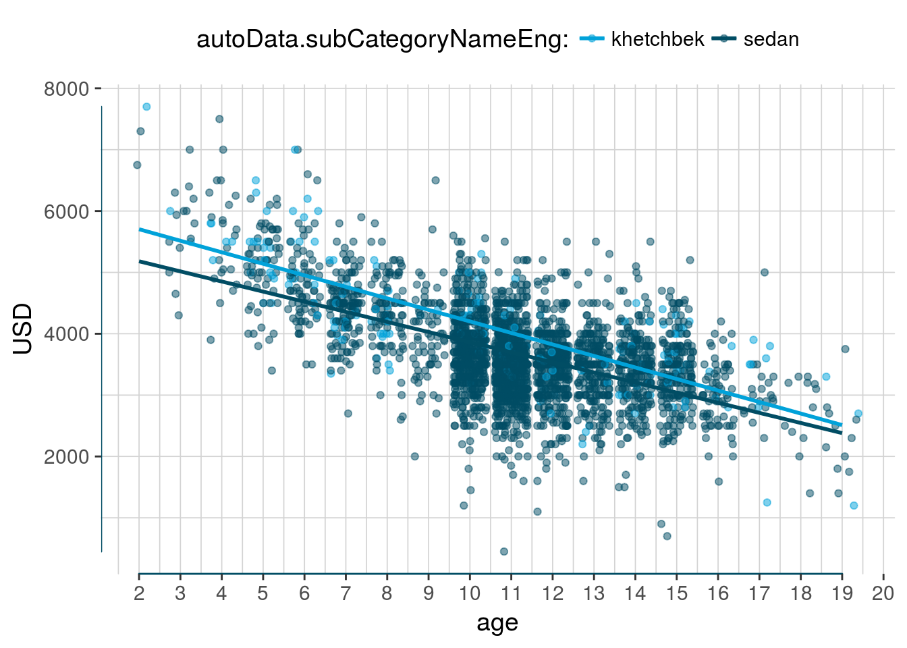
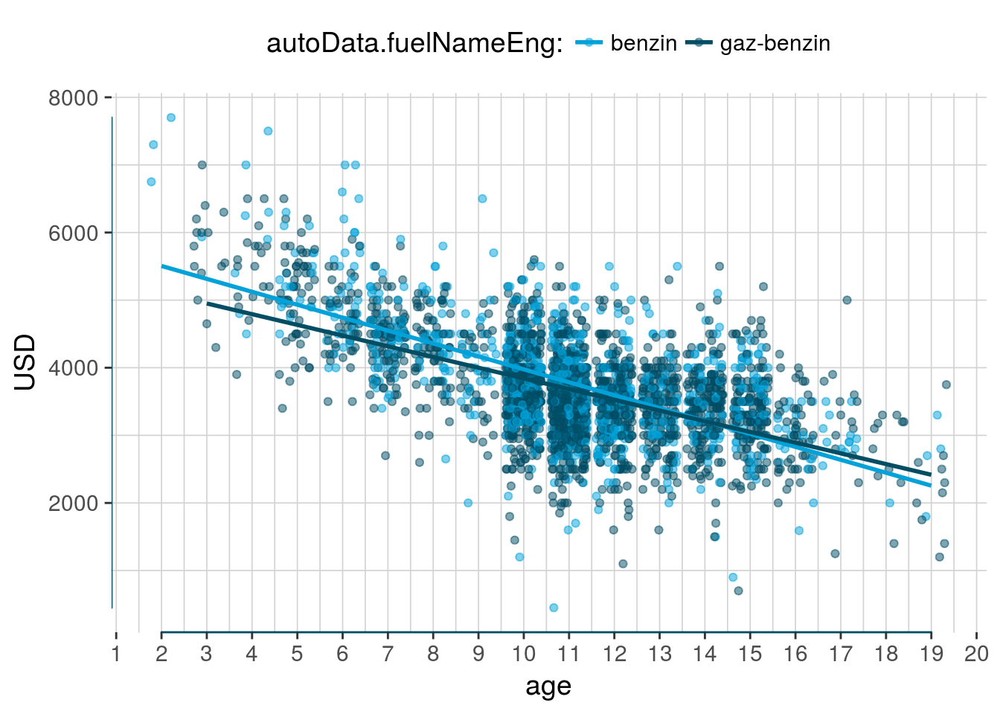
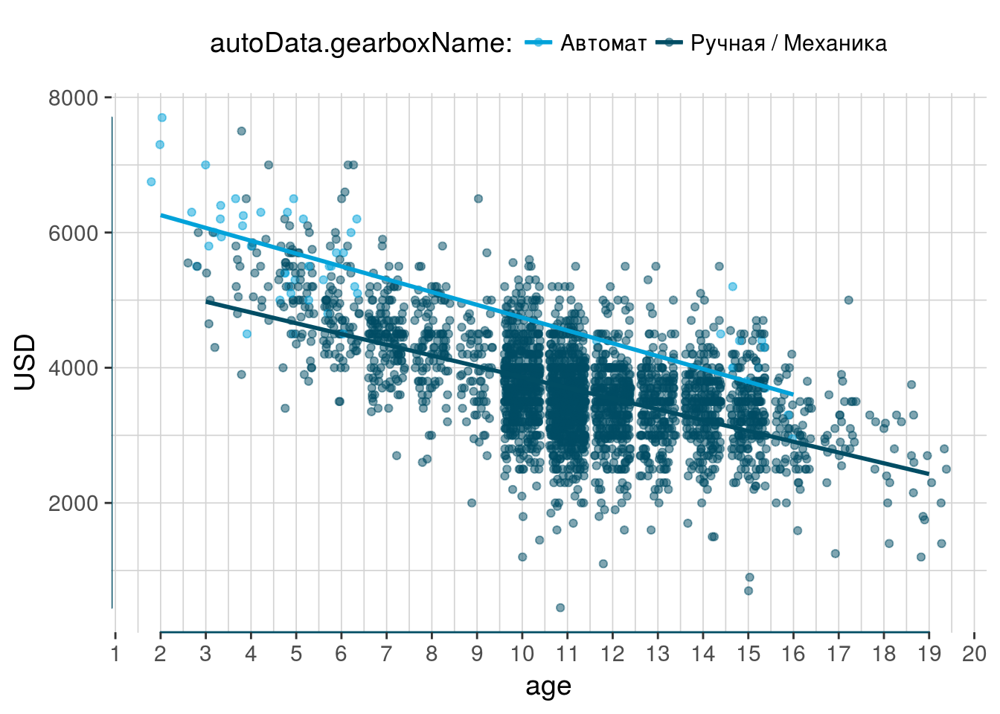
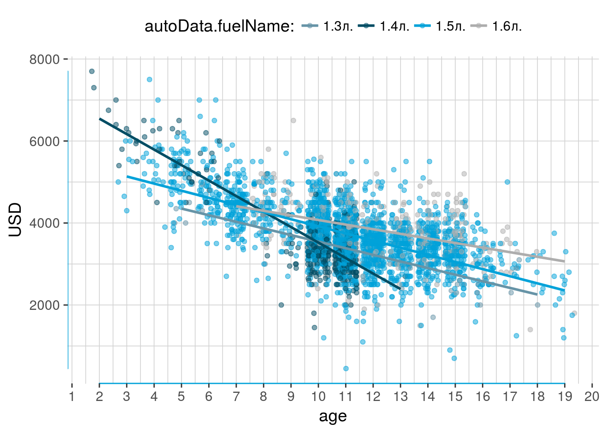

Lanos Model Analysis
O.Yashchuk
Количество автомобилей в разрезе основных характеристик
| Тип топлива | Cars | % |
|---|---|---|
| gaz-benzin | 2054 | 64.67 |
| benzin | 1122 | 35.33 |
| Тип кузова | Cars | % |
|---|---|---|
| sedan | 2969 | 93.48 |
| khetchbek | 207 | 6.52 |
| <!– * Коробк | а перед | ач –> |
| Коробка передач | Cars | % |
|---|---|---|
| Ручная / Механика | 3119 | 98.21 |
| Автомат | 57 | 1.79 |
| <!– * Объём двигате | ля –> |
| Объём двигателя | Cars | % |
|---|---|---|
| 1.5л. | 2345 | 73.84 |
| 1.4л. | 433 | 13.63 |
| 1.3л. | 43 | 1.35 |
| 1.6л. | 355 | 11.18 |
| <!– * Призводител | ь марки | –> |
| Призводитель марки | Cars | % |
|---|---|---|
| Daewoo | 2977 | 93.73 |
| ЗАЗ | 176 | 5.54 |
| Chevrolet | 23 | 0.72 |
Предварительные общие выводы:
- \(2/3\) всех машины данной марки оборудованы ГБО установкой
- подавляющее большинство машин имеют кузов седан
- доля авто с автоматической коробкой передач очень мала
- самый распространённые объём двигателя - \(1.5л\) (3 машины из 4), и примерно каждая 4-я машина имеет двигатель объёмом \(1.4л\) или \(1.6л\). Двигатели объёмом \(1.3л\) встречаются очень редко (одна машина из ста).
- Daewoo является самым массовым производителем данной модели авто. Незначительную часть занимает ЗАЗ, и совсем считаные единицы произвёл Chevrolet.
Анализ стоимости авто
Общее распределение цены и возраста авто выглядит следующим образом. Распределение имеет тенденцию к линейной зависимости рассматриваемых переменных.

На графике видна чёткая закономерность снижения стоимости авто с возрастом.
Распределение цены и пробега авто также имеет линейную тенденцию и выглядит следующим образом. 
Благодаря наблюдению склонности к линейной тенденции, появляется возможность применить множественную линейную регрессию для описания закона изминения цены на автомобиль от раличных параметров автомобиля.
Проверим, как влияют различные параметры на стоимость авто. Для этого построим регрессионные прямые для наборов факторов каждого показателя.
Цена / тип кузова
Цена авто на хэтчбэк выше чем на седан. Но, разница в цене не значительна, а доля хэтчбыэков всего 6.52%. Соответственно, возможно в последствии продать хэтчбэк будет сложнее.

Цена / тип топлива
Установка ГБО не влияет на цену авто, поэтому можно приобрести авто с ГБО установкой по цене бензинового типа. Причём, авто с ГБО установкой составляют 2/3 всех предложений данной марки.

Цена / тип коробки передач
Автоматическая коробка передач встречается всего в 1.79% случаев для данной марки (57 объявления). Поэтому, нет смысла детально рассматривать данный разрез.
Хотя поверхностный анализ говорит, что машины с автоматической коробкой передач дороже механических аналогов на примерно 800$.

Цена / объём двигателя

- Имеем возможно визуально убедится в том, что двигатели объёмом \(1.5л\) являются самыми распространёнными.
- Интересно заметить, что почти всё машины с объёмом двигателя \(1.6л\) старше 10 лет
- А типичный возраст для машин с объёмом двигателя \(1.4л\) - 10-11 лет
- В тоже время все машины с объёмом двигателя \(1.3л\) моложе 6 лет, но в целом их количество незначительно
Цена / производитель

На графике видно, что машины марки Daewoo в основном имею возраст больше 10 лет. Машины младше 10 лет производились заводом ЗАЗ. И колиечство машин марки Chevrolete имеют незначительное кол-во представителей.
Модель множественной линейной регресси от основных характеристик
Проанализируем влияние каждого из рассмотреных показателей автомобиля на его цену \((USD)\). Применим метод множественной линейной регрессии.
| USD | ||||
| B | CI | p | ||
| (Intercept) | 6303.07 | 5979.66 – 6626.48 | <.001 | |
| age | -128.22 | -136.76 – -119.68 | <.001 | |
| markNameDaewoo | 21.61 | -202.08 – 245.31 | .850 | |
| markNameЗАЗ | 185.64 | -52.72 – 424.00 | .127 | |
| autoData.raceInt | -3.40 | -3.71 – -3.09 | <.001 | |
| autoData.fuelName1.4л. | -17.89 | -190.74 – 154.95 | .839 | |
| autoData.fuelName1.5л. | 465.57 | 300.34 – 630.81 | <.001 | |
| autoData.fuelName1.6л. | 706.37 | 533.39 – 879.35 | <.001 | |
| autoData.fuelNameEnggaz-benzin | 18.79 | -22.22 – 59.80 | .369 | |
| autoData.gearboxNameРучная / Механика | -1010.55 | -1162.94 – -858.16 | <.001 | |
| autoData.subCategoryNameEngsedan | -147.65 | -226.37 – -68.93 | <.001 | |
| Observations | 3176 | |||
| R2 / adj. R2 | .511 / .510 | |||
Анализ таблицы линейной регрессии:
- Коэфициенты \(B_{i}\) показывают изминение стоимости авто в зависимости от каждого фактора.
- В колонке \(CI\) - доверительные интервалы для коэфициентов \(B_{i}\).
- Значение \(p\) указывает на значимость коэфициента. Если \(p > 0.5\) коэфициент является незначимым для данной модели.
Интерпретация коефициентов модели
Модели линейной регрессии достаточно простые, но имею одно существенное преимущество перед большинством более сложных методов. Преимущество заключается в простоте и интуитивности интерпрретации модели.
Посмотрим, какие можно сделать выводы смотря на таблицу коэфициентов модели.
Коэфициент \(B_0\) он же \((Intercept)\) показывает стоимость автомобиля при установлении всех показателей на базовый уровень, т.е. при возрасте авто \(0~лет\), пробеге \(0~км\) и т.д.
Итак, вывод:
- базовая стоимость авто \(6303\) USD
- с каждым годом авто изменяется в цене на \(-128\) USD
- за авто с двигателем объёмом \(1.5л\) придётся доплатить \(466\) USD а за авто с двигателем \(1.6л\) - \(706\) USD
- автомобили с установленным ГБО не отличаются в цене от исключительно бензиновых аналогов
- машина с механической коробкой передач будет отличатся от автоматической на \(-1011\) USD
- цена на авто в кузове седан отличается от цены на кузов хэтчбэк на \(-148\) USD
Визуальный анализ модели

Сколько стоит авто подходящее необходимым требованиям?
Механика расчёт стоимости согласно модели множественной линейной регрессии
Допустим мы хотим купить авто анализируемой модели. Введём основные параметры которые нас интересуют.
К примеру. Мы хотим купить авто по следующим требованиям:
- авто младше 10 лет
- пробег меньше 100 тыс. км.
- ручная коробка передач
- установленное ГБО
- двигатель 1.5л
Рассчитаем стоимость авто с данными требованиями согласно полученой модели.
wanted_years <- 10 # Максимальный возраст авто
wanted_race <- 100 # Максимальный пробег
wanted_gear <- 1 # Авто имеет ручную коробку передач (да - 1, нет - 0)?
wanted_body <- 1 # Авто имеет кузов седан (да - 1, нет - 0)?
wanted_gearType1.5 <- 1\[x = Intercept - coef_{age}*wanted_{years} + \\ coef_{autoData.raceInt}*wanted_{race} + \\ coef_{autoData.gearboxName}*wanted_{gear} + \\ coef_{autoData.fuelName}*wanted_{gearType} + \\ coef_{autoData.subCategory}*wanted_{body} = \\ 6303.07 + -128.22*wanted_{years} + \\ -3.4*wanted_{race} + \\ -1010.55*wanted_{gear} + \\ 465.57*wanted_{gearType} + \\ -147.65*wanted_{body} = \\3988\]
Итак, авто с данными параметрами должно стоить ориентировочно 3988$.
Теперь, предположим, что нас интересует более новое авто, к примеру, возрастом до 5 лет. Поменяем необходимый параметр и посмотрим на какую стоимость мы можем рассчитывать.
wanted_years_2 <- 5 # Максимальный возраст автоПо аналогичной формуле стоимость такого авто ориентировочно равна 4629$.
Оценка стоимости авто по заданым параметрам
Отойдём от математической части оценки стоимости автомобилей и воспользуемся средаствами языка R для автоматической оценки.
Вывод
С бюджетом в 5000 USD можно расчитывать на хороший автомобиль возрастом до 5 лет, с пробегом до 100 тыс.км., объёмом двигателя 1.5л, с механической коробкой передач и установленным ГБО.